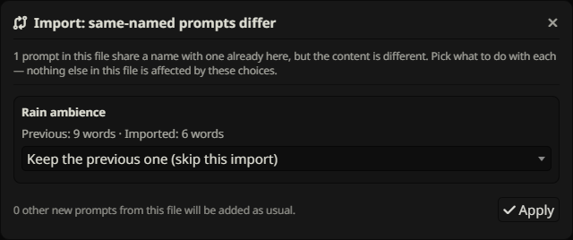
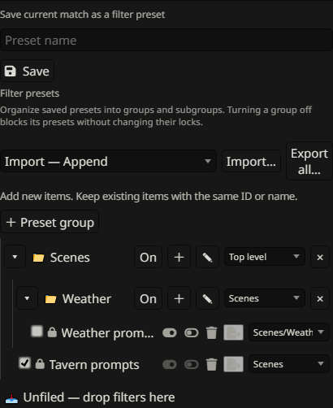
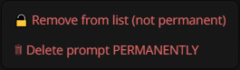
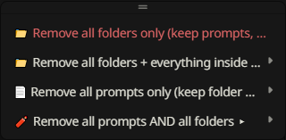

Import, export & removal
Choose the right backup scope and import mode. Preserve tags and extension metadata while remaining compatible with native SillyTavern prompt files.
Export the full prompt list

Open the toolbar Import/Export menu and choose Export prompt list and folders…. Keep this JSON file as the broadest STPHE backup. It includes folder structure and assignments, ordering, intended/master states, exclusions, tags, saved Filter/Chat presets, Auto Filter rules and their groups, plus native prompt definitions/order when available from SillyTavern.
Open AI Response Configuration and Refresh before exporting so the active native list is available. This is an extension/prompt-list backup, not a backup of chats, characters, model credentials or all SillyTavern settings.
Export one prompt or folder

Choose Export this prompt from a prompt’s ⋮ menu to save its definition, tags, relevant folder ancestry, intended state and native ordering information when available. Choose Export this folder from a folder’s menu for its subtree and corresponding prompt metadata. Ancestor paths are included to retain meaningful placement.
Use these focused files to share a scene or reusable prompt without exporting the whole active setup. To transfer a saved filter recipe, use that preset/rule’s own Export instead.
Choose a prompt-list import mode
From the toolbar Import/Export menu, choose the import mode, select a JSON file, and review the confirmation before applying.
| Mode | Existing matching items | Other existing items |
|---|---|---|
| Import — Append | Keep local versions; add new items | Keep |
| Import — Replace matching | Update from the file; add new items | Keep |
| Import — Clear and import | Build the active list and folder organization from the file | Unlist from this active list; reusable native definitions remain |
Clear and import does not permanently delete all reusable prompt definitions or other native prompt lists. When a full backup includes filter collections, those included collections use the same mode. Collections absent from the file remain unchanged.
Files containing only older folder organization can restore that organization without supplying missing native prompt content. Review the confirmation: it tells you when no prompt list is included.
How matching & duplicates work


Imports match a prompt/preset/rule by identifier first. If no identifier match exists, a unique trimmed, case-insensitive name is the fallback. A name match retains the local identifier and remaps relevant imported assignments, tags, order entries and manual effect references to it.
Append keeps matching local entries and their existing active metadata; Replace matching updates them. If several existing entries share the same fallback name, or multiple incoming entries resolve to the same destination, the import reports an ambiguity instead of guessing. Give the conflicting entries unique names or use a file with the intended identifiers, then retry.
What happens to tags

Full-list, folder and single-prompt STPHE exports include saved prompt tags. STPHE imports restore them with their prompt identifiers, including remapping when matching by name. A tag criterion in a saved preset/rule also survives its own export/import.
Append keeps tags on existing matching prompts. Replace matching uses imported tags when provided. An absent tag field in an older/native file does not erase existing tags; an explicitly exported empty tag list [] can clear a matched prompt’s tags in replacement modes. Tags for unrelated reusable definitions are retained.
A preset/rule export contains its tag query, not the tags assigned to your prompts. Export the prompt/list too when the recipient needs those assignments. SillyTavern’s native exporter does not include STPHE tags.
Native & older file compatibility
| File / importer | Behavior |
|---|---|
| Current STPHE → STPHE | Restores supported prompts, tags and extension metadata using the selected mode. |
| Older flat STPHE / Prompt Folders → STPHE | Accepted; missing newer fields are handled without requiring tags. Supported legacy match criteria migrate. |
| Native SillyTavern v1 character/full prompt export → STPHE | Reads its wrapped native prompt data. Native full exports without an active order can add definitions as list items. |
| Current STPHE → native SillyTavern importer | The native-compatible version-1 character envelope supplies prompts/order; native import ignores extension-only metadata and follows native merge behavior. |
Current STPHE files retain the historical top-level fields as well as a native-compatible version: 1, type: "character", data envelope. Use the STPHE importer when you need folders, tags, exclusions and rules restored.
Compatibility does not mean an older extension can understand new features: exporting again from a version that lacks tags may lose them. Unsupported versions or ambiguous files containing multiple active order lists are rejected. The verified native integration is SillyTavern 1.18.0; keep the original backup when moving between versions.
Import append after a row

A prompt or folder ⋮ menu offers Import append after this prompt/folder. Use it to insert imported content beside that item in its parent, instead of using a whole-list toolbar import. It has its own placement/conflict workflow.
When conflicts are found, the dialog offers choices such as keeping the previous prompt, deleting the previous prompt, replacing while keeping the previous folder, replacing using the new folder, or keeping both. Read the displayed choice and confirmation carefully; these per-conflict choices are distinct from the toolbar’s three list-wide modes. A file with prompt definitions may also offer to restore missing prompts.
Transfer preset & rule collections


Filter presets, Chat filter presets and Auto Filter rules each have their own Import and Export all controls, plus individual row exports. An individual export includes necessary group ancestors. Collection import supports Append, Replace matching and Clear and import; matching uses ID then a unique name.
These files carry recipes and group settings, not prompt definitions or assigned prompt tags. Content/tag criteria are portable when suitable prompts exist on the destination. Manual prompt IDs, scoped folder paths and manually selected folders need compatible destination data. Import the relevant prompt backup first if needed, then verify effects before running rules.
For Auto Filter, pause the master while reviewing an import if you do not want enabled imported rules to run yet. Global Auto Filter master/timing preferences are not part of an individual rule export.
Unlist versus permanent deletion


Remove from list (not permanent) takes a prompt out of the active native list but keeps its reusable definition. You can use the native Prompt Manager’s insertion controls to add that definition again. Delete prompt PERMANENTLY deletes the reusable definition; this can affect other presets using its identifier.
Folder deletion offers three branches: delete structure only and move prompts up, delete structure and unlist contents, or delete structure and permanently delete contents. Deleting only a folder also removes its subfolder structure; contents are retained at the parent level. Export first if you want a recovery file.
Remove all: choose the affected scope


The toolbar Remove all menu distinguishes folders only (keep prompts and unfile them), folders plus everything inside, prompts only (keep folder structure), and prompts and folders. Prompt-removal branches offer not-permanent and permanent variants with confirmation.
“Folders plus everything inside” affects filed contents; prompts already in Unfiled are not inside an ordinary folder. “Prompts only” and “prompts and folders” cover the active list. These choices are removal actions, not import modes or filter-collection deletion.